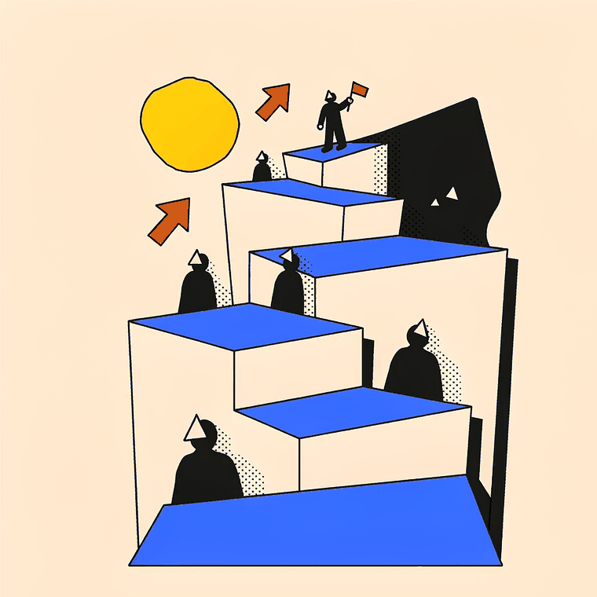
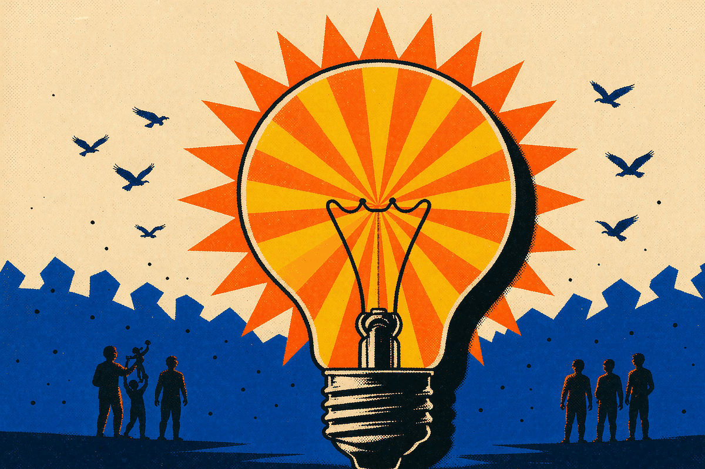

团队项目复盘 · 2026.07.01 — 09.30
把「学工具」变成「做作品」
这一季度，我们把学习变成了作品 —— 96 人开跑，18 个能打开的东西。
汇报人 · 示例 ／ 示例部门 · 2026.10.20
QINGHE COMMUNITY · Q3 REVIEW
目录 · 约 20 min
07.01 — 09.30
NEXT 90 DAYS
左边是「已经发生的」，右边是「准备发生的」—— 中间隔着的就是这一小时。
PART 01
2026.07.01 — 09.30 · 12 周

两条成长线，同一个机制
阶段复盘 · A · 总览
96人
参与打卡学习
31人
完整走完全程
12周
连续打卡周期
注口径提醒：96 / 31 是本轮打卡数据，不与其他批次混用。
阶段复盘 · A · 过程
讲师 A
产品 · 原型
讲师 B
自动化
讲师 C
视觉 · 动效
注讲师是分头接的：谁卡在哪一类，就由谁去接。
阶段复盘 · A · 成果 1/2
阶段复盘 · A · 成果 2/2
覆盖方向：学习 / 生活 / 文化 / 工具 / 游戏 ｜ 结论：打卡不是目的，跑出可展示、可复用的作品才是。
阶段复盘 · B · 总览
48位
成员参与共建
81.3%
39 人完成全程
12位
进阶进入复评
注不要把 81.3% 讲成成果 —— 它是门槛，12 才是成果。
阶段复盘 · B · 过程
个人知识库培训
工具实操 + 三类知识库区别 + 个人知识库框架（工作专项 / 专业领域 / 日常工作 + 辅助板块）
三场工具直播
Day1定位与配置→Day2工作流六块积木→Day3成品打包与发布
直播复盘
单场控到 1 小时内 · 改多人协作讲解 · 辅讲专职看评论区
注直播不是「讲完就算」，复盘之后它自己也被当成了一个产品在迭代。
阶段复盘 · B · 收官
10.20
周二 · 下午
12 位成员，从 48 位共建成员中进阶而来。
四个维度现场展示，评委当场给判断。
知识库框架搭建
结构是否立得住
工具应用
成体系地用，不是即问即走
工作流闭环
从取料到回存跑通
后续规划
下一步要长成什么
注不是比赛，是筛人 —— 比出谁愿意走、谁能走，后面重点服务这批人。
阶段复盘 · 小结
注两条线走法不同，底层是同一套机制；社区从「听课的人」变成「动手的人」。
PART 02
NEXT · 三个方向
三块规划，一条主线
后续规划 · A · 陪跑方式（上）
12 位成员现场展示。展示本身不是目的，是筛出下一段要重点陪的人。
不再要求天天签到，改为 自愿登记 + 定期小聚 + 按需约人。
统一节奏能拉齐下限，但拉不高上限 —— 所以要换打法。
后续规划 · A · 陪跑方式（下）
自学档（资料自取）、结对档（两人互查）、一对一档（每周一次）。
分档不设淘汰，随时可以往上走。
发的是「被看见」的机会 —— 比发实物更能让人真的动手试。
留档
可用于内部推荐
1 件
进作品墙
1 位
下期带新人
1 次
分享名额
注激励要发「能带来下一次动手」的东西，别发完就断。
后续规划 · B · 课程体系
面向全社区开一次公开课，讲清楚「学完能做成什么」。
入门级只保「做出来」，进阶级才讲「怎么改、怎么维护、怎么交给别人」。
入门级 ＝ 0→1，把想法变成能交付的东西；进阶级 ＝ 1→N，把东西做成能长期维护的工程。
01
入门级
想法 → 能交付的东西
N
进阶级
做成能长期维护的工程
后续规划 · C · 社区运营（上）
一页说清「做了什么、解决了谁的什么问题」，配一张图。
不作又一个资料堆，而是以作品墙为入口，把作品、模板、协作流程串起来。
注社区不是靠喊出来的，是靠作品流动起来的。
后续规划 · C · 社区运营（下）
组织方只提供场地、模板和一次答疑，主题由成员自己定。
先跑通 一个小闭环，再谈复制；不追求人数和场次。
收尾
这一季度我们证明了一件事 ——
普通人也能做出真东西。
NEXT · 依次发生
谢谢
